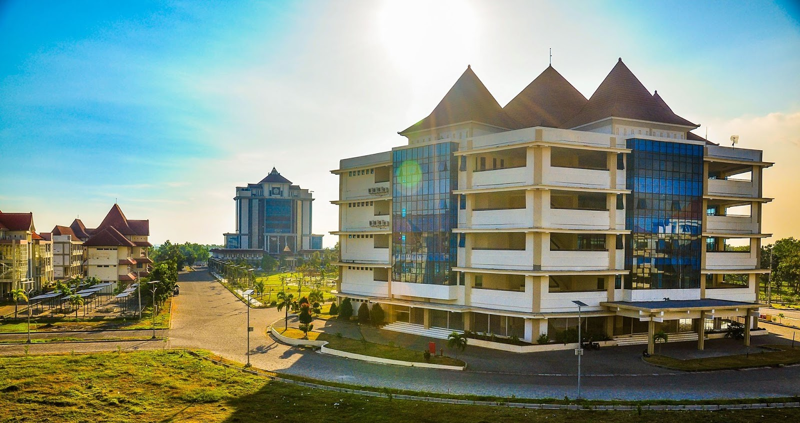

Sejarah

Universitas Trunojoyo Madura merupakan kelanjutan dari Universitas
Bangkalan Madura (Unibang) yang " berubah statusnya " dari Perguruan
Tinggi Swasta menjadi Perguruan Tinggi Negeri berdasarkan Keputusan
Presiden (Keppres) RI Nomor 85 Tahun 2001 Tertanggal 5 Juli 2001.
Peresmian berlangsung pada tanggal 23 Juli 2001. Dalam sambutannya
KH. Abdurrahman Wahid sebagai Presiden Republik Indonesia pada waktu
itu, mengatakan bahwa salah satu keinginan Masyarakat Madura untuk
memiliki Universitas Negeri telah tercapai. Keinginan lainnya agar
pulau Madura dihubungkan dengan pulau Jawa juga telah tercapai
dengan diresmikannya Jembatan Suramadu pada tanggal 10 Juli 2009
oleh Presiden Republik Indonesia Susilo Bambang Yudhoyono.
Keberadaan Universitas Trunojoyo Madura seperti kondisinya yang ada
saat ini, masih dalam tahap pembenahan-pembenahan mendasar, seperti
renovasi gedung perkuliahan, kantor administrasi, kantor pusat
maupun fakultas, dan prasarana kampus seperti instalasi listrik dan
air serta sarana olahraga dalam kampus. Saat ini dilakukan pula
upaya untuk melengkapi sarana laboratorium yang ada di semua
fakultas.
Universitas Trunojoyo Madura dibangun di atas lahan seluas 30
hektar, yang terletak 5 kilometer dari pelabuhan Kamal dan sekitar
15 kilometer dari Kota Bangkalan. Pengembangan kampus di masa yang
akan datang diarahkan menjadi lingkungan yang nyaman untuk kegiatan
belajar mengajar. Pohon-pohon direncanakan akan lebih banyak ditanam
untuk meghilangkan kesan kekeringan dan kegersangan pulau Madura.
Selain itu, lokasi Universitas Trunojoyo Madura akan berada dalam
lingkungan pusat pengembangan Bangkalan sebagai perluasan kota
Surabaya dalam satuan wilayah pengembangan Gerbang kertasusila
(Gresik, Bangkalan, Mojokerto, Surabaya, Sidoarjo, Lamongan).
Visi dan Misi
VISI
Visi UTM adalah "Pada tahun 2030 menjadi institusi yang mampu
mewujudkan lulusan yang cerdas, berdaya saing, berakhlakul karimah
dan unggul dalam pendidikan serta riset berdasarkan potensi Madura
".
MISI
Untuk mencapai visi yang telah ditetapkan, UTM menetapkan misi
sebagai berikut:
-
Menyelenggarakan layanan pendidikan yang berkualitas, relevan
dan kompeten untuk penguatan ilmu pengetahuan, teknologi serta
iman dan takwa;
-
Menyelenggarakan kegiatan penelitian dan pengabdianmasyarakat
berdasarkan potensi Madura secara berkesinambungan dalam
mendukung proses pembelajaran dan publikasi ilmiah;
-
Meningkatkan jejaring kerja sama dengan pemerintah, swasta,
industri, pondok pesantren, alumni dan lembaga pendidikan di
dalam dan luar negeri yang dapat menunjang pengembangan potensi
Madura; dan
-
Meningkatkan tata kelola perguruan tinggi menggunakan prinsip
kredibel, transparan, akuntabel, tanggung jawab, dan adil.
TUJUAN
Selaras dengan Misi yang telah ditetapkan, maka tujuan UTM adalah:
-
Menghasilkan layanan pendidikan yang berkualitas, dan kompeten
untuk penguatan ilmu pengetahuan dan teknologi serta keimanan
dan ketakwaan.
-
Menghasilkan penelitian dan pengabdian kepadaberdasarkan potensi
Madura secara berkesinambungan dalam mendukung proses
pembelajaran dan publikasi ilmiah.
-
Menghasilkan jejaring kerja sama dengan instansi pemerintah,
swasta, industri, pondok pesantren, alumni dan pendidikan di
dalam dan luar negeri yang dapat menunjang pengembangan potensi
Madura.
-
Menghasilkan sistem tata kelola perguruan tinggi yang kredibel,
transparan, akuntabel, tanggung jawab, dan adil.
Biaya
Berdasarkan Peraturan Kementerian Pendidikan, Kebudayaan, Riset dan
Teknologi (Kemendikbudristek) nomor 2 Tahun 2024 tentang Standar
Satuan Biaya Operasional Pendidikan Tinggi (SSBOPT) Perguruan Tinggi
Negeri (PTN), pasal 6 ayat (4) berbunyi, pemimpin PTN dapat
menetapkan kelompok selain kelompok I dan kelompok II dengan nilai
nominal tertentu paling tinggi sama dengan besaran Biaya Kuliah
Tunggal (BKT) yang telah ditetapkan pada setiap Program Studi
(Prodi). Adapun Universitas Trunojoyo Madura (UTM) melakukan
penambahan golongan Uang Kuliah Tunggal (UKT) yang semula 6
golongan, kini menjadi 10 golongan, dengan rentang Rp3.000.000
hingga Rp7.000.000. Berikut daftar UKT terbaru di Universitas
Trunojoyo Madura :